Kapitel 6 Differentialregning
Når man differentierer en funktion f, kaldes resultatet " den afledede af f mht. x " eller “f mærke af x”. At differentiere en funktion mht. til x, er en operation, hvor vi finder en ny funktion, vi skriver \(f^{'}\left( x \right)\), der er en del teori og beviser omkring dette, som vi ikke gennemgår her.
Hvis vi ser på grafen nedenfor, kan man se at funktionsværdien falder fra 0 til -1, når x ændres fra 0,5 til 1. Når x ændres fra 1 til 1,5 falder funktionsværdien fra -1 til -10,125.
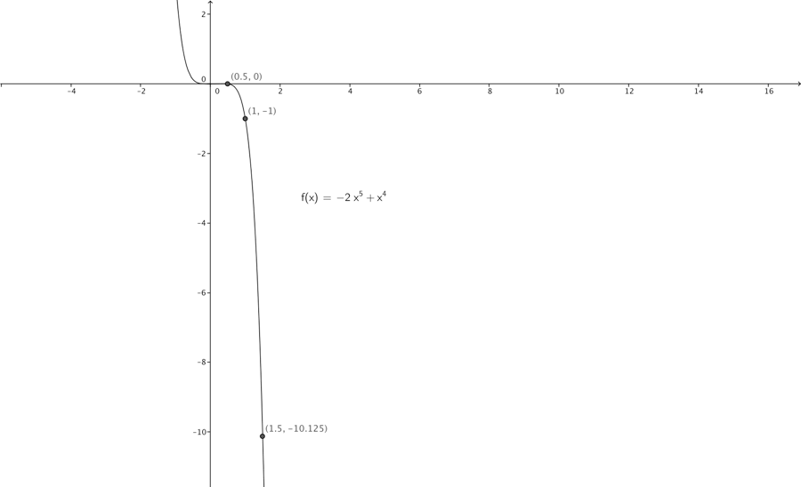
En funktion kan altså vokse eller aftage med forskellig hastighed i forskellige punkter. Denne punktvise hastighed kan vi beskrive ved hjælp differentialregning,
Vi kan beskrive denne hastighed af funktionsværdien i et punkt \(\left( f\left( x \right),x \right)\\)vha. tangentens hældning i punktet. En tangent er en ret linje, der berører en kurve i et punkt, og har samme hældning som kurven i punktet. Vi kan se nedenfor, at i punktet (1,-1), har tangenten hældning -6. Denne hældning finder vi ved at differentiere funktionen f(x), vi kalder som nævnt den differentierede funktion " f mærke af x " og skriver \(f'(x)\).
\[f\left( x \right) = - 2x^{5} + x^{4}\]
\[f^{'}\left( x \right) = 5 \cdot - 2x^{5 - 1} + 4 \cdot x^{4 - 1} = - 10x^{4} + 4x^{3}\]
Her er benyttet en del regler som vi vender tilbage til om et øjeblik.
Når vi har fundet f mærke af x, indsætter vi x værdien, fra punktet vi søger at finde hastigheden for. Da punktet er (1,-1), indsætter i altså 1 i \(f'(x)\)
\[f^{'}\left( 1 \right) = - 10 \cdot 1^{4} + 4 \cdot 1^{3} = - 10 + 4 = - 6\]
Det betyder at tangentens hældning i punktet (1,-1)[^4] -6, eller løst formuleret hastigheden i punktet er -6. Dette er tegnet ind nedenfor.
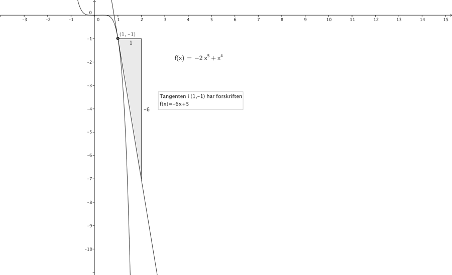
6.1 Regneregler differentiation
Nedenstående skema giver en oversigt over gængse differentiationsregneregler, samt eksempler, k er en konstant \(a,b \in \mathbb{R,\ }n \in \mathbb{N}\).
| \[f(x)\] | \[f'(x)\] |
|---|---|
| \[k\] | \[0\] |
| \[x\] | \[1\] |
\[\text{ax}\] \[3x\] |
\[a\] \[3\] |
\[x^{n}\] \[x^{3}\] |
\[n \cdot x^{n - 1}\] \[3x^{2}\] |
| \[e^{x}\] | \[e^{x}\] |
| \[\ln\left( x \right)\] | \[\frac{1}{x}\] |
\[\frac{1}{x^{n}} = x^{- n}\] \[\frac{1}{x^{2}} = x^{- 2}\] |
\[- nx^{n - 1}\] \[- 2x^{- 3}\] |
\[\sqrt[n]{x} = x^{\frac{1}{n}}\] \[\sqrt[3]{x} = x^{\frac{1}{3}}\] |
\[\frac{1}{n}x^{\frac{1}{n} - 1}\] \[\frac{1}{3}x^{\frac{1}{3} - 1} = \frac{1}{3}x^{- \frac{2}{3}}\] |
Vi har herudover følgende vigtige regneregler:
\[\left( f\left( x \right) \pm g\left( x \right) \right)^{'} = f^{'}\left( x \right) \pm g'(x)\]
f.eks.
\[\left( 3x^{2} - 2x \right)^{'} = 6x - 2\]
Produktreglen:
\[\left( f\left( x \right) \cdot g\left( x \right) \right)^{'} = f^{'}\left( x \right) \cdot g\left( x \right) + f\left( x \right) \cdot g'(x)\]
f.eks.
\[\left( 3x^{4} \cdot \ln\left( x \right) \right)^{'} = 12x^{3} \cdot \ln\left( x \right) + 3x^{4} \cdot \frac{1}{x} = 12x^{3} \cdot \ln\left( x \right) + 3x^{3}\]
Kvotientregnereglen:
\[\left( \frac{f\left( x \right)}{g\left( x \right)} \right)^{'} = \frac{f^{'}\left( x \right) \cdot g\left( x \right) - f\left( x \right) \cdot g^{'}\left( x \right)}{\left( g\left( x \right) \right)^{2}}\]
f.eks.
\[{\left( \frac{2x^{2} - 3x + 3}{x + 5} \right)^{'} = \frac{\left( 4x - 3 \right) \cdot \left( x + 5 \right) - \left( 2x^{2} - 3x + 3 \right) \cdot 1}{\left( x - 5 \right)^{2}} = }{\frac{4x^{2} + 20x - 3x - 15 - 2x^{2} + 3x - 3}{\left( x - 5 \right)^{2}} = \frac{2x^{2} + 20x - 18}{\left( x - 5 \right)^{2}}}\]
6.2 Ekstremumspunkter
Indenfor økonomi er det vigtigt at kunne finde den afledede, når \(f^{'}\left( x \right) = 0\\), har vi et globalt eller lokalt, minimum eller maksimum. Man vil således være i stand til at bestemme, f.eks. maksimal omsætning for en omsætningsfunktion vha. differentialregning. Antag vi har en pris/afsætningsfunktion \(f\left( x \right) = - 0.25x + 10\). Udfra denne kan vi danne omsætningsfunktionen.
Omsætning er jo per definition pris gange afsætning. Sælger man 3 is til 10 kr. er afsætningen 3 stk. og omsætningen 30 kr.
Afsætningen er vores x-værdi, og den tilsvarende pris er jo vores funktionsværdi f(x). Derfor kan vi bestemme omsætningsfunktionen som
\[\text{Oms}\left( x \right) = x \cdot f\left( x \right) = x\left( - 0.25x + 10 \right) = - 0.25x^{2} + 10x\]
Vi kan nu bestemme den afledte til omsætningsfunktionen som:
\[\text{Om}s^{'}\left( x \right) = - 0.5x + 10\]
Man kalder også den afledte til omsætningsfunktionen for GROMS grænseomsætningen eller MR marginal revenue, funktionsværdierne for \(\text{Om}s^{'}\left( x \right)\), angiver hældningerne for tangenterne på \(Oms(x)\) kurven for forskellige afsætningsværdier. GROMS fortæller hvor meget omsætningen vokser med når afsætningen x eller Q vokser med en enhed.
Hvis en issælger har MR på 5 kr. Betyder det at omsætningen vokser med 5 kr. hvis afsætningen vokser med en is.
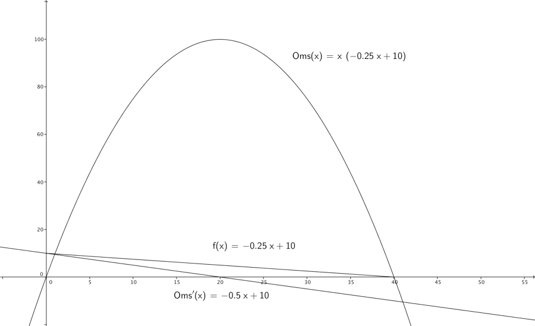
Tangentens hældninger angiver funktionens fart, når tangentens hældning er 0, vokser omsætningen ikke. Nedenfor er indtegnet 3 tangenter med de tilsvarende hældninger. Ved en afsætning \(x = 5\) er tangenthældningen 7,5, omsætningen vokser altså. Ved en afsætning \(x = 20\) er tangenthældningen 0, omsætningen har altså nået et ekstremum i dette tilfælde et globalt maksimum. Ved en afsætning \(x = 30\) er tangenthældningen -5, omsætningen er altså aftagende. Man kan også se på \(Oms'(x) - GROMS - MR\) kurven, at denne er lig med 0, netop når x er 20.
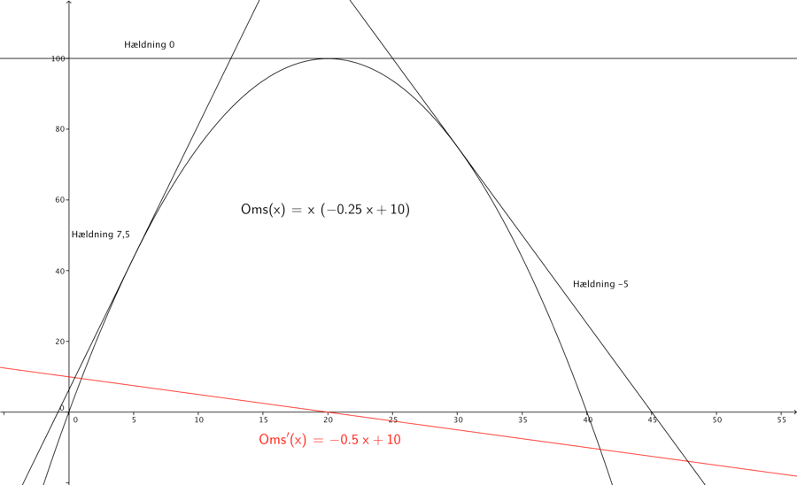
Normalt vil man for at bestemme ekstremumspunkter for en funktion blot, differentiere denne og sætte den afledte funktion lig med 0, så kan man bestemme de x’er for hvilket ligningen er sand. I vores eksempel, ville vi altså bestemme \(\text{Om}s^{'}\left( x \right).\)
\[- 0,5x + 10\]
Og sætte udtrykket lig med 0 og løse mht. x
\[- 0,5x + 10 = 0\]
\[x = 20\]
6.3 Lokale og globale ekstremumspunkter
Hvis vi har funktioner med flere ekstremaer, må man for at afgøre om der er tale om lokale/globale ekstremaer bestemme funktionsværdierne for x-værdi kandidaterne. I tegningen nedenfor har vi et 4-gradspolynomium \(f\left( x \right) = x^{4} - 3x^{3} + 2x^{2} + 3\), her kan man se at den afledede $f^{’}( x ) = 4x^{3} - 9x^{2} + 4x $ er tegnet ind med rødt, det fremgår at \(f'(x)\) har 3 nulpunkter, hvorfor vi kan konkludere at \(f\left( x \right)\) har 3 ekstremaer, lokalt minimum i \((0;3),\\)lokalt maksimum i \((0.6069;3.2017)\) og globalt minimum i (1.6404; 2.3803). Et globalt ekstremum er altså funktionens største eller mindste værdi i hele definitionsmængden. Et lokalt ekstremum er altså funktionens største eller mindste værdi i en omegn omkring punktet.
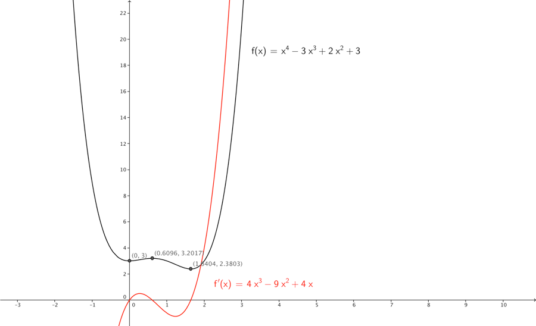
6.4 Konveksitet og konkavitet
Vi kan ved finde den dobbeltaflede (dvs. differentiere 2 gange) for en funktion , afgøre hvornår en funktion er konkav eller konveks. Dette kan direkte fortælle os om en funktion har maksimum eller minimum i et ekstremumspunkt. I intervaller hvor en funktion er konveks dvs. krummer opad vil ekstremumspunkter være minima, i disse intervaller vil den dobbeltafledede være positiv. I intervaller hvor en funktion er konkav dvs. krummer nedad vil ekstremumspunkter være maksima, i disse intervaller vil den dobbeltafledede være negativ. Når \(f^{''}\left( x \right) = 0\\) skifter grafen mellem konveks og konkav eller omvendt, vi siger grafen har vendetanget. I eksemplet nedenfor kan man se \(f\left( x \right)\) er blå når den er konkav, og rød når den er konveks, hvilket stemmer overens med \(f''(x)\), der er hhv. negativ for \(x \in \rbrack - \infty;1\lbrack\) og positiv for \(x \in \rbrack 1;\infty\lbrack\).
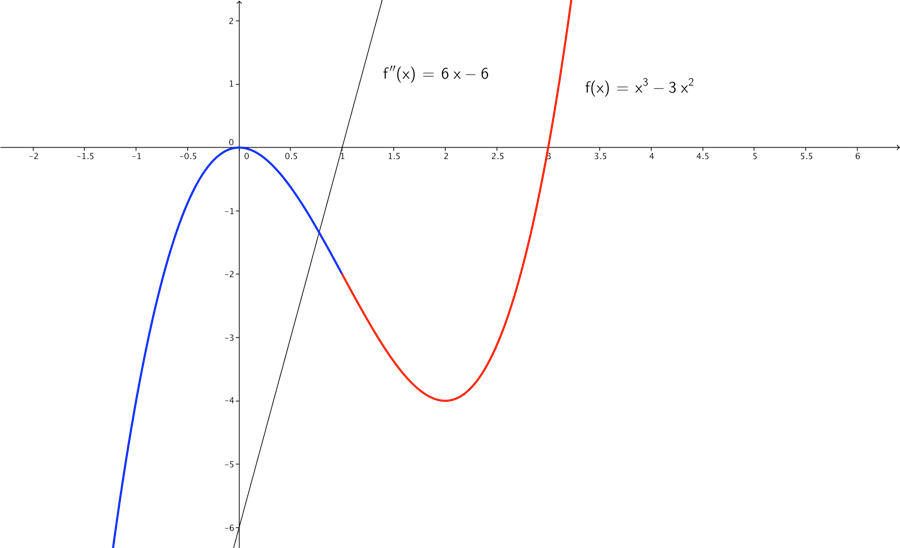
6.5 Sammenhænge AVC, ATC, TC, TR, MC, MR og \(\mathbf{\pi}\)
Vi kan ud fra pris- afsætningskurven P(Q), altså kurven der angiver hvilken mængde man kan afsætte, finde TR(Q) ved at gange med Q.
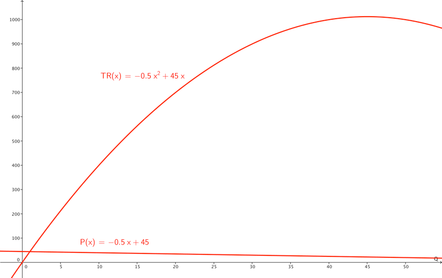
Q er quantity/mængde, der produceres og afsættes ud af x-aksen denne uafhængige variabel styrer værdien af de nedenstående størrelser:
FC fixed costs (dansk FO faste omkostninger)
VC total variable costs (dansk VO variable omkostninger).
TC total costs, kan beregnes som VC + FC
AVC average variable costs (dansk VE variable enhedsomkostninger) betyder den gennemsnitlige variable omkostning pr. stk., denne kan beregnes som \(AVC = \frac{\text{VC}}{Q}\)
ATC average total costs kan beregnes som \(ATC = \frac{\text{TC}}{Q}\)
MC marginal cost (dansk GROMK grænseomkostninger) betyder hvad koster det at producere en enhed mere. \(MC = \frac{\text{dTC}}{\text{dQ}} = \frac{\text{dVC}}{\text{dQ}}\), grafisk er MC hældningen af tangenten i et punkt på TC kurven.
Nedenfor er ovenstående sammenhænge illustreret, bemærk bl.a. at for en afsætning Q på 8, er tangenten med hældning MC indtegnet på både TC og VC kurverne. Her kan man se hvordan vi vil beregne MC ud fra både TC og VC som nævnt ovenfor.
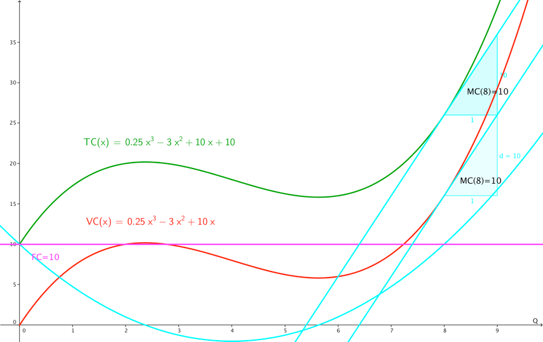
I nedenstående plot er ATC og AVC tegnet ind sammen med TC og VC.
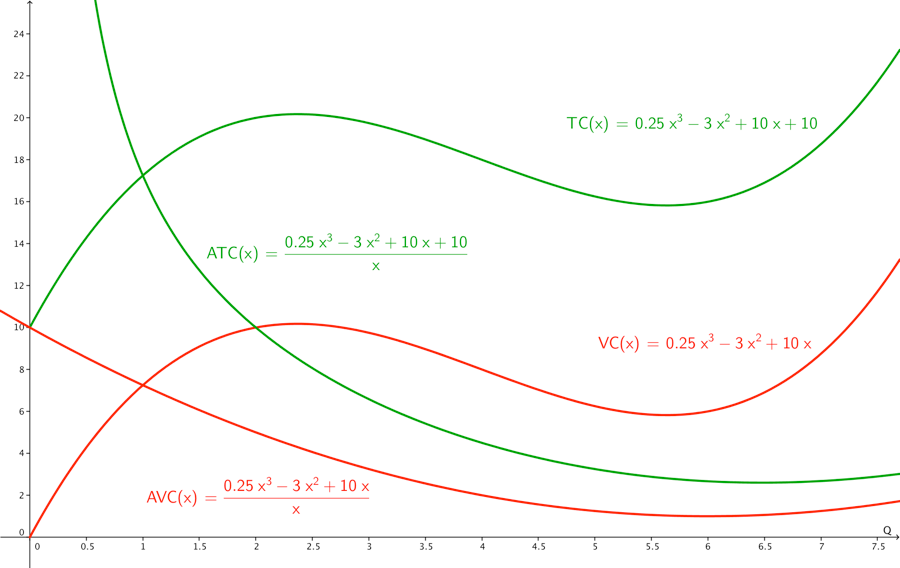
6.6 Optimeringseksempel
TR total revenue er omsætningen.
MR marginal revenue (dansk Groms grænseomsætningen ) betyder, hvad øges omsætningen med, når der afsættes en enhed mere. \(MR = \frac{\text{dTR}}{\text{dQ}}\) , grafisk er MR hældningen af tangenten i et punkt på TR kurven.
I tegningen nedenfor er indtegnet en blå TR kurve og en rød MR kurve og 2 sorte tangenter, hvor MR er hhv. 25 og 0. X-aksen angiver afsætningen Q, y-aksen omsætningen. Man kan se at der hvor MR kurven skærer x-aksen (dvs er 0), har TR-kurven maksimum, for denne afsætning Q=45 er hældningen på tangenten 0. Bemærk MR er den afledte af TR. Den maksimale omsætning bliver \(\text{TR}\left( 45 \right) = - 0,5{\cdot 45}^{2} + 45 \cdot 45 = 1012,5\).
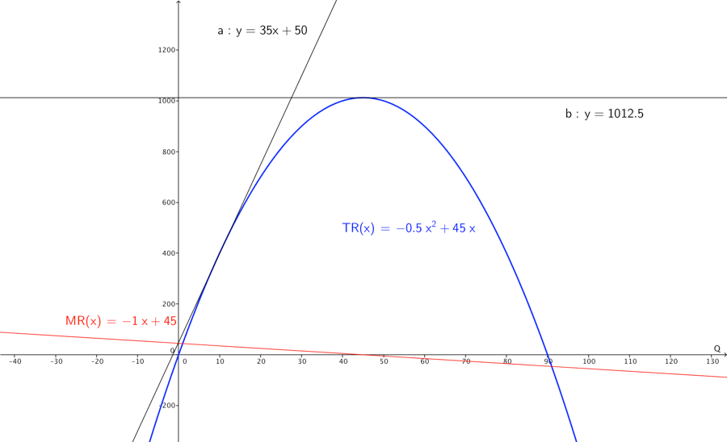
Hvis vi også har en TC total costs funktion f.eks. \(TC = 0,25Q^{3} - 6Q^{2} + 60Q\), kan vi udfra denne beregne profitfunktion π som.
\[\pi = TR - TC = - 0,5Q^{2} + 45Q - \left( 0,25Q^{3} - 6Q^{2} + 60Q \right) =\]
\[- 0,25Q^{3} + 5,5Q^{2} - 15Q\]
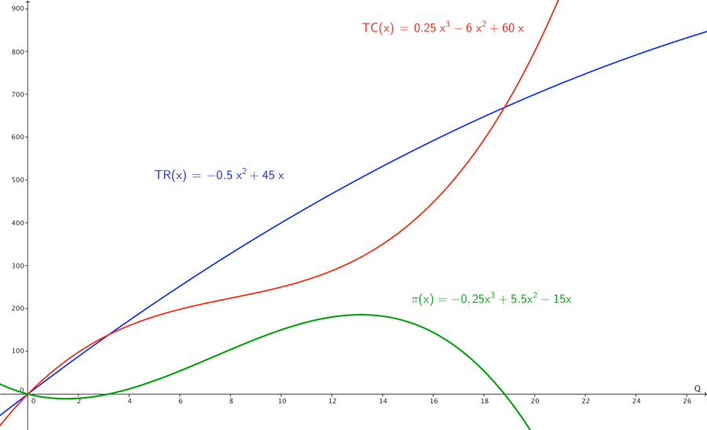
Når vi skal finde den optimale profit, skal vi altså finde maximum for π –funktionen, kan vi differentiere denne, og bestemme hvor den afledede π’ er 0. Der hvor π’ er 0 ligger tangenten vandret, her har π ekstremumspunkter. For at afgøre om der er tale om maksimum eller minimum kan man tage den dobbeltafledede π’‘, for intervaller hvor den π’’ er negativ, er π konkav (krummer nedad) i disse intervaller vil der være et maksimum.
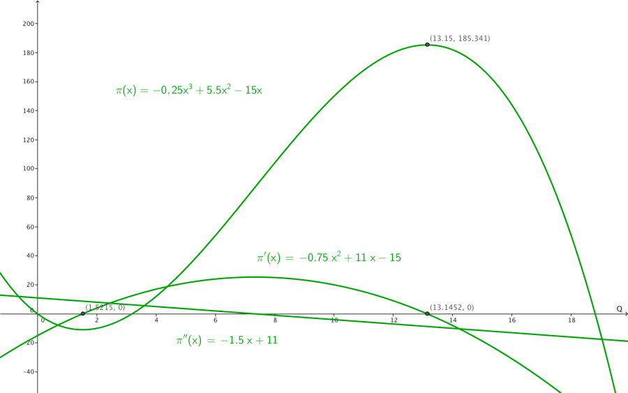
Hvis vi skal finde maksimum ved udregning, finder vi π’ og finder nulpunkter for denne, herefter π’’ bestemmer fortegn for nulpunkter, nulpunkt med negativ dobbeltafledet er et maksimum.
\[\pi^{'} = 3 \cdot - 0,25Q^{3 - 1} + 2 \cdot 5,5Q^{2 - 1} - 15 = - 0,75Q^{2} + 11Q - 15\]
\[rø\ \ dder = \left\{ \begin{matrix} \frac{- 11 + \sqrt{11^{2} - 4 \cdot - 0,75 \cdot - 15}}{2 \cdot - 0,75} = \frac{- 11 + \sqrt{121 - 45}}{- 1,5} \approx 1,52 \\ \frac{- 11 - \sqrt{11^{2} - 4 \cdot - 0,75 \cdot - 15}}{2 \cdot - 0,75} = \frac{- 11 - \sqrt{121 - 45}}{- 1,5} \approx 13,15 \\ \end{matrix} \right.\ \]
Vi kan se på tegningen ovenfor, at rødderne stemmer overens med nulpunkterne. Vi udregner nu \(\pi''\).
\[\pi^{''} = 2 \cdot - 0,75Q^{2 - 1} + 11 = - 1,5Q + 11\]
Vi ser at \(\pi''\left( 1,52 \right) = - 1,5 \cdot 1,52 + 11 = 8.72\) dvs. π er konveks for \(Q = 1,52\), dette punkt er altså et minimum.
Vi ser at \(\pi''\left( 13,15 \right) = - 1,5 \cdot 13,15 + 11 = - 8,73\) dvs. π er konkav for \(Q = - 8.725\), dette punkt er altså et maksimum.
Man kan nu udregne den maksimale profit som \(\pi\left( 13,15 \right) \approx 185,34\).
Bemærk at man kan også bestemme den optimale afsætning Q, ved at bestemme MC og MR, og sætte disse lig med hinanden, se nedenstående tegning.
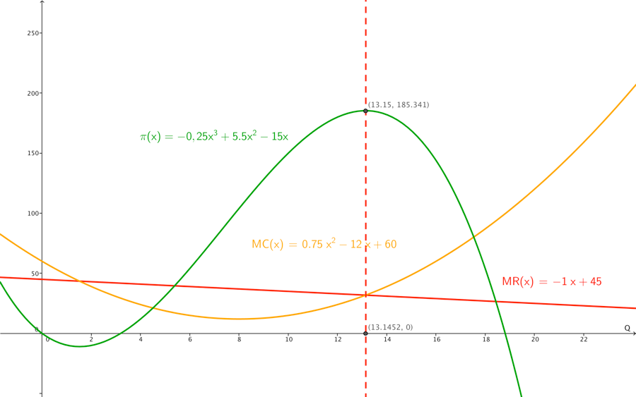